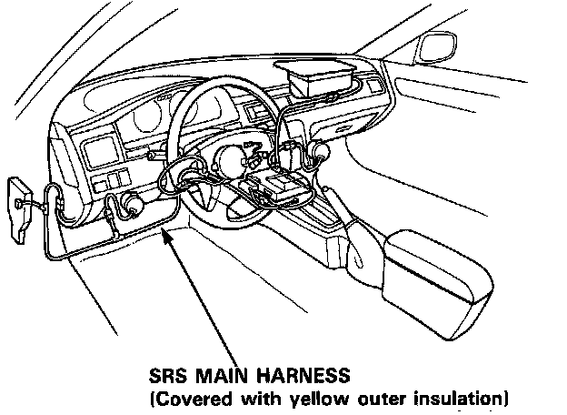
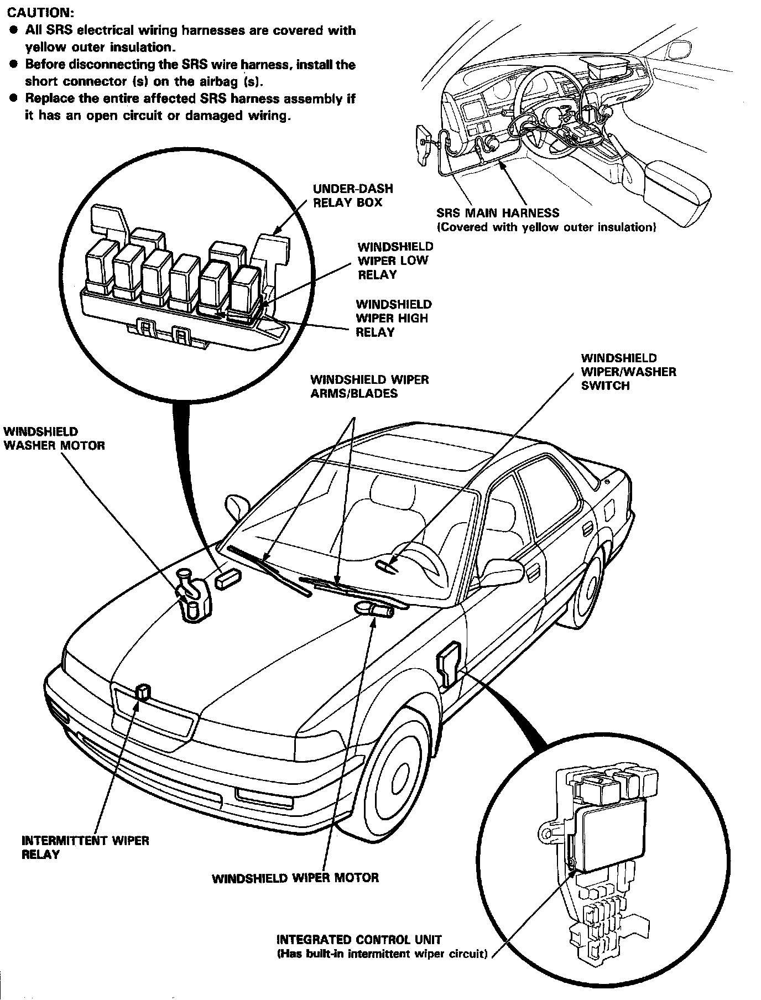
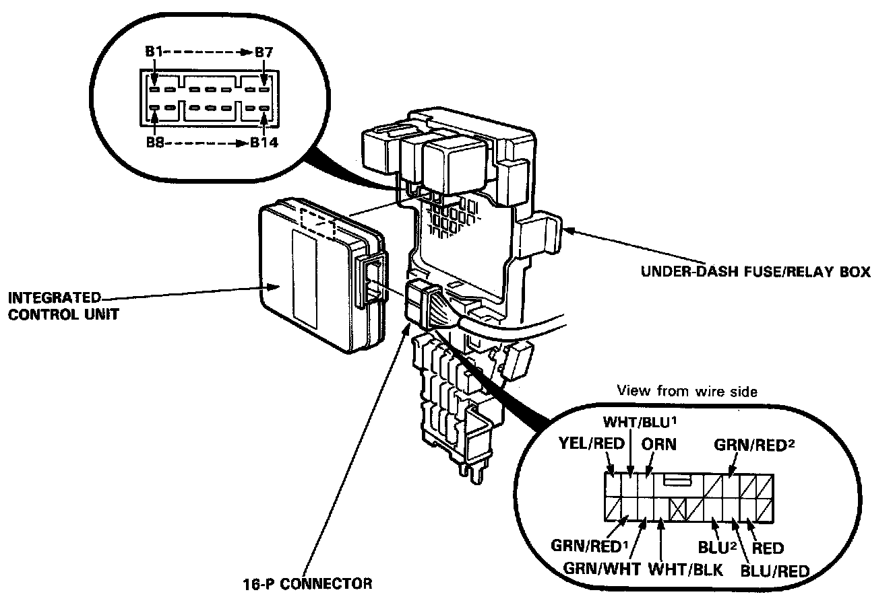

Wiper and Washer Systems: Locations

CAUTION:
- All SRS electrical wiring harnesses are covered with yellow outer insulation.
- Before disconnecting the SRS wire harness, install the short connector (S) on the airbag (5).
- Replace the entire affected SRS harness assembly if it has an open circuit or damaged wiring.

Left Kick Panel:

Remove the left side kick panel cover, then disconnect the 16-P connector from the integrated control unit. Re-move the integrated control unit from the under-dash fuse/relay box.
Inspect the connector terminals to be sure they are all making good contact.
- If the terminals are bent, loose or corroded, repair them as necessary, and recheck the system.
- If the terminals look OK, make the following input tests at the connector terminals.
- If any test indicates a problem, find and correct the cause, then recheck the system.
- If all the input tests prove OK, the control unit must be faulty; replace it.